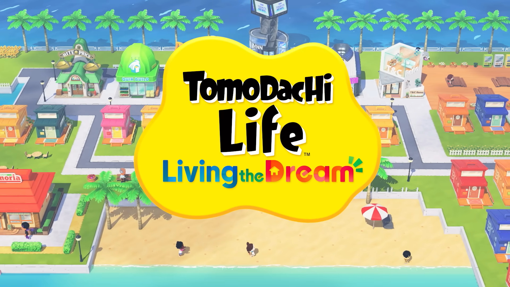
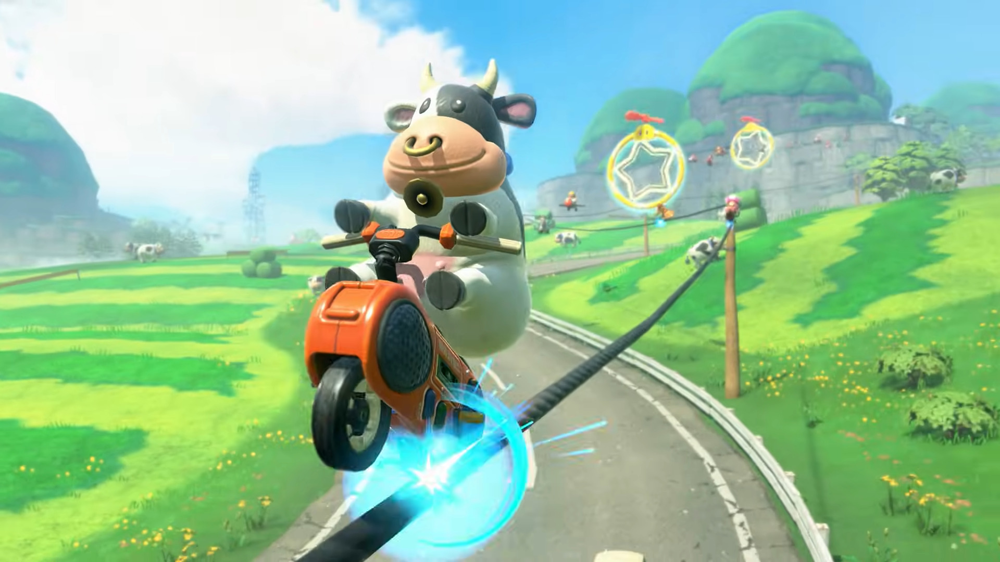
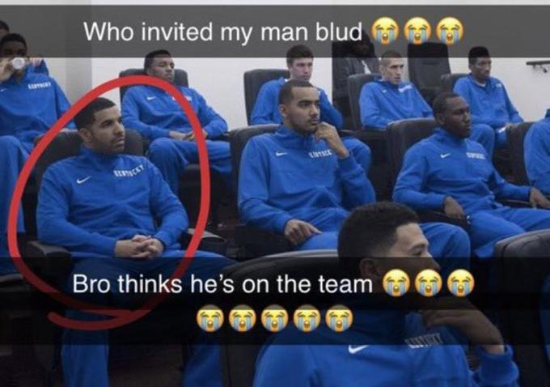
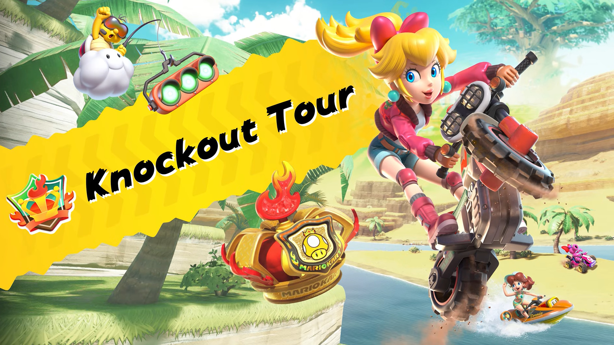
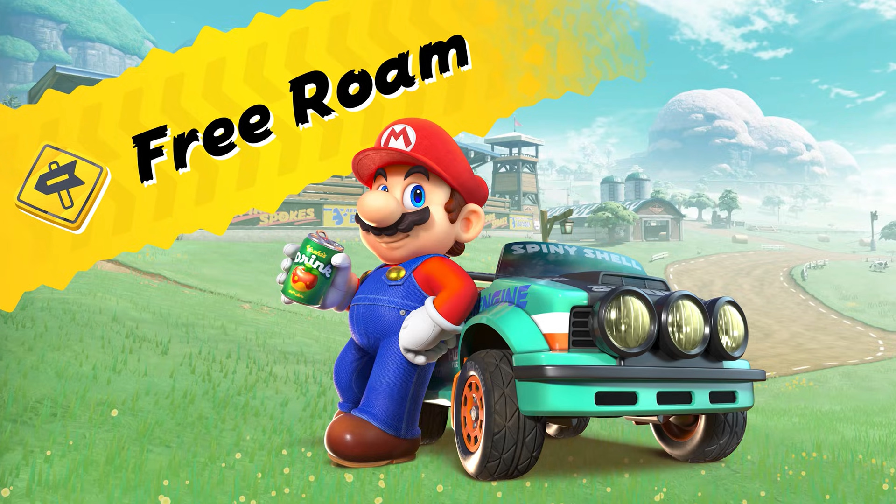
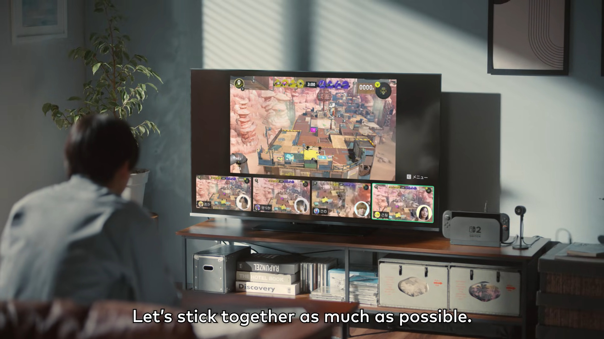
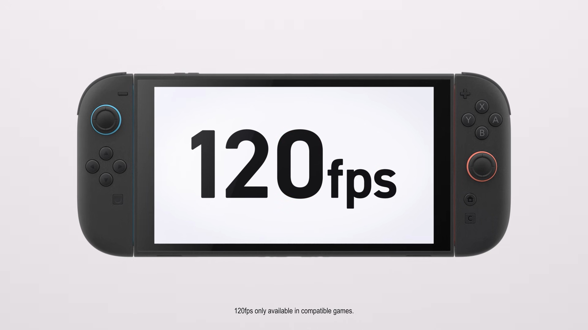
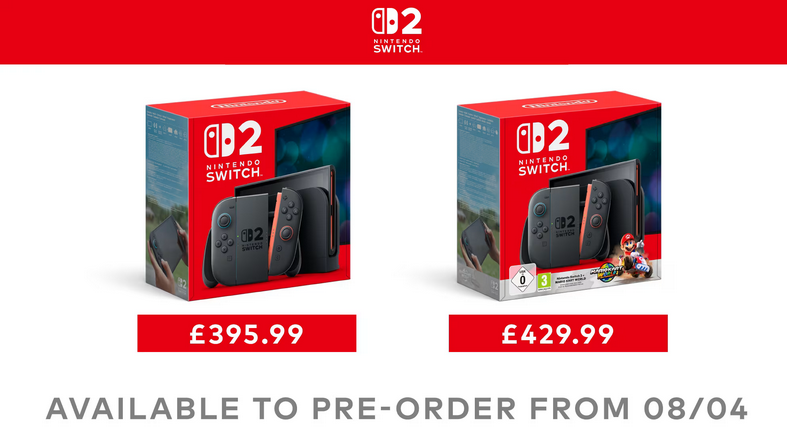
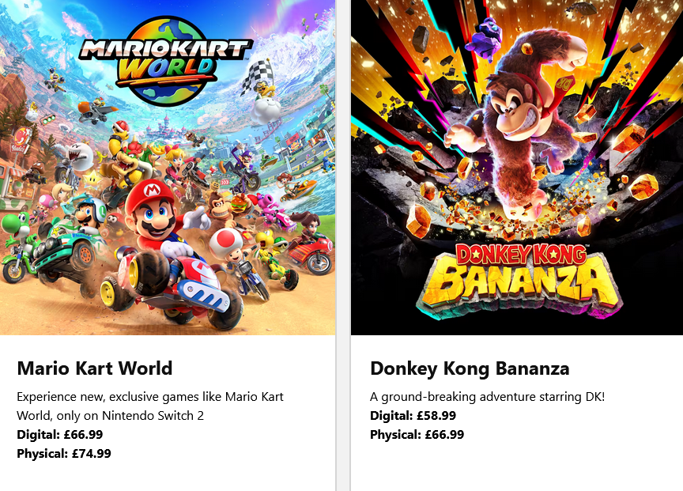

switch 2 direct thoughts
2025 April 03there was a switch 2 direct today and i have a LOT of thoughts, i'll also briefly go over the direct the week before
3.27.2025 direct
not much that i care about tbh. rhythm heaven and TOMODACHI LIFE are really cool especially tomodachi life i was kinda doubting that it would exist. there's also metroid prime 4 which i was waiting for the prime remasters to come out to play the prime series but they don't exist... so idk what to do now... probably emulation
tomodachi life looks like it's gonna be like a city builder which... i'm mixed about. like it's kinda cool but i feel like new horizons fills that niche. tbh i'd rather they'd swap with ac being more linear which they might be doing? i'm not sure but i'm excited.
4.2.2025 switch 2 direct
mario kart world
holy FUCK this game looks peak. rail grinding, wall riding, costumes, dude the characters look so EXPRESSIVE?! the game looks so stylish with the way u can grind on rails, trick off onto a wall then bounce between them i need it NOW. also there's so many damn characters like...

pianta, cataquack, penguins, stingby, snowmen, dolphins, sidesteppers, fucking fish bone??? he doesn't even have limbs
THEY REALLY ARE ADDING ANYBODY LMAO https://t.co/UcvrIXxg57 pic.twitter.com/JJdofUopVe
— No Context Super Mario (@SuperMarioOOC85) April 2, 2025
BRO THEY'RE ADDING KNOCKOUT MODE BASED OFF OF MODS? this was a thing in mario kart wii for a while and they're adding it to the game like that's so cool. you get knocked out when you don't place above a certain place and it's kinda like a battle royal. i think it's an interesting way of playing the game and it's cool they're acknowledging it now
there's also free roam which we'll have to wait for the game to release to see how good it is but it looks cool. the tracks would need to have some depth and it appears like there is. you can also take pictures which is cool as well
also unrelated the karts now have gliders and there might not be underwater sections since you can drive on water now. good riddance the gliders were ugly and i hated driving underwater.
it's also gonna be a launch game so june 5th. i'm excited def the game i'm most looking forward to.
game chat
it's cool. i'm glad people have the option but personally i'd rather use discord which u just need an audio cable for. especially screen share that shit is like 144p 5fps. although it might be good for competitive splatoon which might be too broken...
120FPS HOLY SHIT. if u can use this with splatoon 3 it'll be HEAT omg i'm so excited PLEASE support it. u could say it could give a competitive advantage but u can say that about every competitive game on pc. this is definitely one of the features i'm most excited for i can't believe they actually did it.
there'll also be a microphone with noise cancelling software which is nice. also later in the direct it shows it supports 1440p! will it support 1440p120? unlikely but one can hope
there's also a camera which is like $50 yeah nobody buying this
storage will be upgraded from 32gb to 256gb. that's more than my switch storage and sd card combined! really nice you might not even need an sd card at least for a while. i really hope this doesn't encourage devs to optimise less since some games will not fully be on the cart and they're pushing into digital games which i'll talk about later
4k resolution is insane i really think they wouldn't do it. i don't have 4k tho so idrc.
there will be a new switch pro controller, mainly with the c button and g buttons on the back! i'm not sure what it could be good for maybe like 45 degree camera changes? i probably won't buy one until my pro controller is breaking in half
welcome tour
this is like an interactable manual with minigames which would be cool... if it was free... yeah nobody buying ts
that one wheelchair basketball game
nobody buying ts either LMAO
some games will be getting enhanced versions with a fee... but some of these include dlc! including mario party jamboree and kirby forgotten land. will probably only buy the latter, jamboree looks like it's just showing off the mechanics of the switch 2. metroid prime 4 will also get mouse support! surprised they didn't show it with splatoon, tbh splatoon wasn't shown at all considering it's one of their big four (or five)
third party
i feel like 80% of the direct was for third party. i guess they have wii u tramua. first of all elden ring is coming which is really cool, i still haven't played it since i just recently beat the dark souls trilogy but i'll be playing on pc. also street fighter is cool i think smash tournies will use switch 2 for sf6 now. cool that they can use one console for both
DELTARUNE TODAY
deltarune chapters 3 and 4 will be coming out on june 5th... mario kart's gonna have some competition... we got a small glimpse which looks cool so far, can't wait!
SILKSONG
it's out in 2025... or are they lying again just like 2023, we'll just have to wait and see. hollow knight is in my top 3 games of all time so i can't wait to finally play if it's actually gonna be out this year. wish they showed more though
the duskbloods
from software is making a multiplayer game. they really didn't show anything just custscenes so i'm pretty interested. they got people suckin souls, guns, and turning into dinosaurs?? so weird. people are saying it's bloodborne 2 but idk if they're just joking or not.
kirby air ride(ers)
bro why did he edge us thinking it's smash. i've never played kirby air ride so i don't have many thoughts but it'll probably be good.
NEW 3D MAR-... 3D DONKEY KONG!!
i feel like i'm repeating myself. game looks cool looks fun dk looks expressive. i still don't like the new model but i think i can tolerate it. the world looks open as well it just looks really cool idk! also it comes out basically on launch like a month later. i'm surprised they're taking the risky route instead of a 3d mario but i'm down. i fw it
price
this shit is expensive as fuck
i'm gonna talk about the uk prices cause that's where i live and there's like no discussion about it. nearly £400 for the console is pretty steep and another £30 for mario kart. tbh i might be coping but it doesn't look that bad compared to other countries? general consensus
however the prices for the games are fucking INSANE. nearly £80 for mario kart??? in what world? you can probably buy it on amazon for £60-65 but that's still pretty damn high. i'll probably be buying less games and i think i won't buy anything except for mario kart, prices are just way too high. i'll just wait for price drops. imo it's because of tariffs and nintendo wants to be greedy. nintendo would probably get a lot of americans mad if it was more expensive in america only.
final thoughts
overall i'm kinda mixed. i think the pacing of the direct was just bad and it just froze halfway through and had delayed audio the entire time so that didn't help. but they didn't really show a lot of games? we got a 3d dk, kirby air ride, jamboree and forgotten land dlc, and duskbloods. thats kinda it. the rest was mostly third party games which i don't think people buy a switch for. it's not gonna be their whole lineup for 2025 (probably). i'm excited for the games that were shown though, especially mario kart world nothing else is making me as excited as that game and it's on launch!
also we got tons of bowser footage including a parental controls video remake. one day nintendo will announce a bowser game and it'll get a 100 on metacritic...
that's all my thoughts though. i haven't been doing much to the site cause i've been playing persona 5 and i just beat it. holy peak... also i just dunno what to write or make i got no ideas. sorry! ok cya